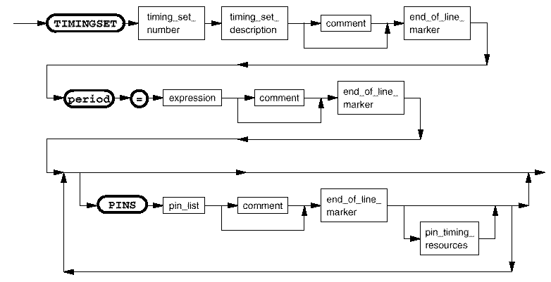

Timing sets (TIMINGSET)

timing_set_number |
An integer in the range 1 to 256. |
timing_set_description |
A string of up to 60 characters. If it is enclosed in double quotes ("..."), everything inside the quotes is taken as the description - even spaces. If the description is not enclosed in double quotes, all characters up to but not including the first space is taken as the description. |
expression |
A test system period value in milliseconds (ms) for pins specified by "PINS". See Syntax of expression. |
pin_list |
The name of the pin or pins for which the following period and edge timing are to be applied. This may also include names of pin groups created using the DFGP command. |
pin_timing_resources |